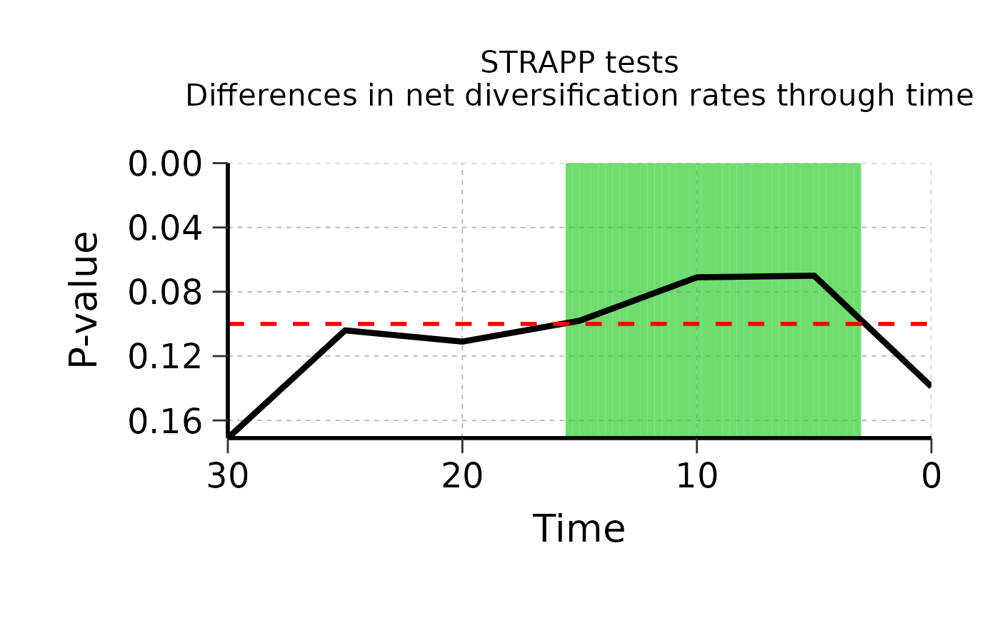
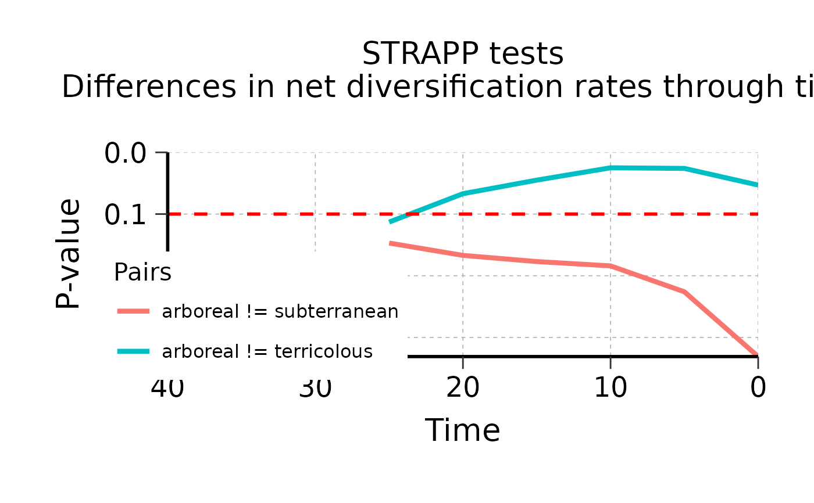

Plot evolution of p-values of STRAPP tests over time
Source:R/plot_STRAPP_pvalues_over_time.R
plot_STRAPP_pvalues_over_time.RdPlot the evolution of the p-values of STRAPP tests
carried out for across multiple time_steps, obtained from
run_deepSTRAPP_over_time().
By default, return a plot with a single line for p-values of overall tests.
If plot_posthoc_tests = TRUE, it will return a plot with multiple lines, one per pair in post hoc tests
(only for multinominal data, with more than two states).
If a PDF file path is provided in PDF_file_path, the plot will be saved directly in a PDF file.
Usage
plot_STRAPP_pvalues_over_time(
deepSTRAPP_outputs,
time_range = NULL,
pvalues_max = NULL,
alpha = 0.05,
display_plot = TRUE,
plot_significant_time_frame = TRUE,
plot_posthoc_tests = FALSE,
select_posthoc_pairs = "all",
plot_adjusted_pvalues = FALSE,
PDF_file_path = NULL
)Arguments
- deepSTRAPP_outputs
List of elements generated with
run_deepSTRAPP_over_time(), that summarize the results of multiple deepSTRAPP across$time_steps.- time_range
Vector of two numerical values. Time boundaries used for X-axis the plot. If
NULL(the default), the range of data provided indeepSTRAPP_outputswill be used.- pvalues_max
Numerical. Set the max boundary used for the Y-axis of the plot. If
NULL(the default), the maximum p-value provided indeepSTRAPP_outputswill be used.- alpha
Numerical. Significance level to display as a red dashed line on the plot. If set to
NULL, no line will be added. Default is0.05.- display_plot
Logical. Whether to display the plot generated in the R console. Default is
TRUE.- plot_significant_time_frame
Logical. Whether to display a green band over the time frame that yields significant results according to the chosen alpha level. Default is
TRUE.- plot_posthoc_tests
Logical. For multinominal data only. Whether to plot the p-values for the overall Kruskal-Wallis test across all states (
plot_posthoc_tests = FALSE), or plot the p-values for the pairwise post hoc Dunn's test across pairs of states (plot_posthoc_tests = TRUE). Default isFALSE. This is only possible ifdeepSTRAPP_outputscontains the$pvalues_summary_df_for_posthoc_pairwise_testselement returned byrun_deepSTRAPP_over_time()whenposthoc_pairwise_tests = TRUE.- select_posthoc_pairs
Vector of character strings used to specify the pairs to include in the plot. Names of pairs must match the pairs found in
deepSTRAPP_outputs$pvalues_summary_df_for_posthoc_pairwise_tests$pair. Default is "all" to include all pairs.- plot_adjusted_pvalues
Logical. Whether to display the p-values adjusted for multiple testing rather than the raw p-values. See argument 'p.adjust_method' in
run_deepSTRAPP_for_focal_time()orrun_deepSTRAPP_over_time(). Default isFALSE.- PDF_file_path
Character string. If provided, the plot will be saved in a PDF file following the path provided here. The path must end with ".pdf".
Value
The function returns a list of classes gg and ggplot.
This object is a ggplot that can be displayed on the console with print(output).
It corresponds to the plot being displayed on the console when the function is run, if display_plot = TRUE,
and can be further modify for aesthetics using the ggplot2 grammar.
If a PDF_file_path is provided, the function will also generate a PDF file of the plot.
Details
Plots are build based on the p-values recorded in summary_df provided by run_deepSTRAPP_over_time().
For overall tests, those p-values are found in $pvalues_summary_df.
For multinominal data (categorical or biogeographic data with more than 2 states), it is possible to plot p-values of post hoc pairwise tests.
Set plot_posthoc_tests = TRUE to generate plots for the pairwise post hoc Dunn's test across pairs of states.
To achieve this, the deepSTRAPP_outputs input object must contain a $pvalues_summary_df_for_posthoc_pairwise_tests element that summarizes p-values
computed across pairs of states for all post hoc tests. This is obtained from run_deepSTRAPP_over_time() when setting
posthoc_pairwise_tests = TRUE to carry out post hoc tests.
Examples
## Load results of run_deepSTRAPP_over_time() for categorical data with 3-levels
data(Ponerinae_deepSTRAPP_cat_3lvl_old_calib_0_40, package = "deepSTRAPP")
## Plot results of overall Kruskal-Wallis / Mann-Whitney-Wilcoxon tests across all time-steps
plot_STRAPP_pvalues_over_time(
deepSTRAPP_outputs = Ponerinae_deepSTRAPP_cat_3lvl_old_calib_0_40,
alpha = 0.10,
time_range = c(20, 50))

## Plot results of post hoc pairwise Dunn's tests between selected pairs of states
plot_STRAPP_pvalues_over_time(
deepSTRAPP_outputs = Ponerinae_deepSTRAPP_cat_3lvl_old_calib_0_40,
alpha = 0.10,
plot_posthoc_tests = TRUE,
# PDF_file_path = "./pvalues_over_time.pdf",
select_posthoc_pairs = c("arboreal != subterranean",
"arboreal != terricolous"))
